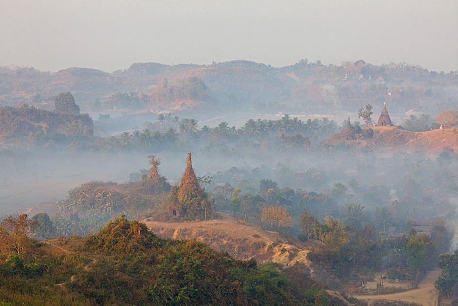
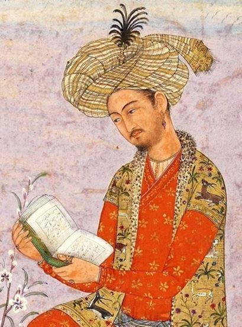
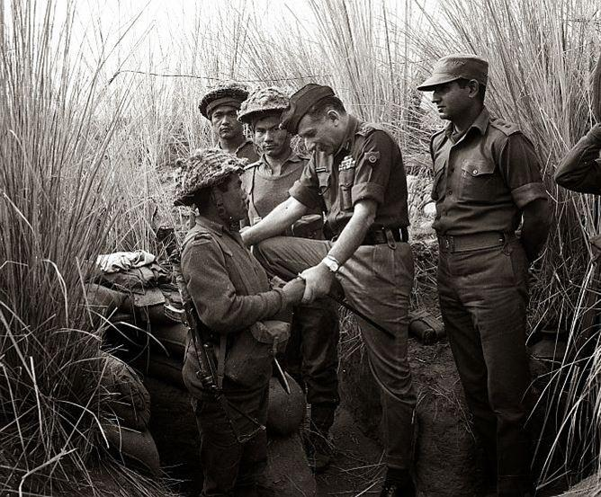
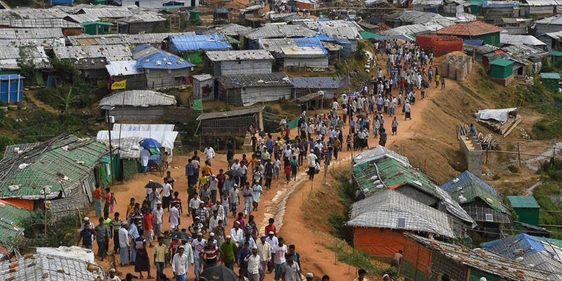
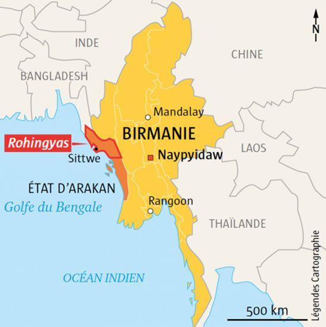

Depuis le XVIe siècle et le premier royaume de Mrauk’U jusqu’à l’annexion de l’Arakan par les Anglais en 1826, les alliances entre féodalités se composaient et se recomposaient au gré des enjeux politiques et des affinités interindividuelles, entretenant des liens autant à l’ouest avec les émanations politiques du Bengale qu’à l’est avec les puissances inféodées aux royaumes birmans ou encore môns. Les royaumes arakanais et birmans étaient par ailleurs régulièrement en conflit, ce dernier ayant souvent tenté et réussi à différentes périodes à étendre son influence sur l’Arakan, notamment en 1785 sous le commandement du souverain d’Ava, Bodawpaya.
Les Anglais ont encouragé, au 19e siècle, la venue des Bengalis, de confession musulmane, dans cette partie de la Birmanie, mais le fait musulman est plus ancien. En effet, il existait un royaume, Mrauk U du nom de sa capitale, qui a duré de 1431 à 1785. Une partie de la population était constituée par les Kamein. Ces Musulmans sont arrivés dans cette région au 13e siècle alors que leurs coreligionnaires régnaient sur le Port de Chittagong dans l’actuel Bangladesh.
L’expansion du Royaume, entre 1570 et 1630, se fit au détriment aussi bien des Seigneurs Bouddhistes que Musulmans, mais également au détriment des comptoirs portugais, alors qu’en même temps s’établissait l’Empire Moghol. Entre 1526 et 1707 l’empire Moghol marquera l’interaction entre la civilisation musulmane et indienne. Bâbur, un descendant de Gengis Khan et de Tamerlan, mis fin au sultanat de Delhi et instaura la dynastie Moghol. Mais c’est Akbar, son petit-fils, qui accéléra la mainmise de l’empire sur l’Inde et recherchera un point de rencontre entre les religions hindouiste et islamique.
Devant cette menace, le Royaume établit un traité avec les Portugais ce qui lui assurait la maîtrise des approches maritimes. L’arrivée des Moghols en Inde se traduisit, également, par l’arrivée massive de soldats afghans (les Pathans) en quête d’un refuge dans le Royaume.
En 1785, Bodawpaya prit le contrôle du Royaume qui devint l’Arakan et les populations furent déplacées faisant de cette région une zone dépeuplée.
Les Anglais, fixeront définitivement les frontières de la Birmanie entraînant des changements irréversibles en termes de composition démographique de la région. Ainsi, les royaumes birmans et arakanais passèrent d’un système de pouvoir et de relations avec leurs voisins basé sur des allégeances fluctuantes, à l’intégration à un territoire englobant la Birmanie actuelle (la Burma Proper et les Frontier Areas).
Les Anglais s’attachèrent très vite à développer la riziculture inondée. Les terres basses arakanaises étant largement dépeuplées suite aux déplacements de populations massifs, évoqués plus haut, les Anglais firent appel à la main-d’œuvre bengalis (et musulmane). Si une grosse partie de cette main d’œuvre (comptant au total environ 50,000 saisonniers) traversait la frontière au gré des travaux agricoles, une autre s’installait définitivement en Arakan…
Pendant la 2e Guerre mondiale, les Britanniques armèrent les Birmans pour qu’ils puissent résister à l’invasion japonaise, apportant, sans le vouloir les instruments qui vont servir dès 1942. C’est, en effet, à partir de cette année que les massacres de Musulmans auxquels répondirent les massacres de Bouddhistes, commencèrent. En effet, la prise de contrôle progressive des musulmans et, dans une moindre mesure des Hindous sur la production agricole, les activités usurières et le commerce contribuèrent largement au ressentiment des Arakanais bouddhistes qui massacrèrent des milliers de Musulmans dans le sud de l’Arakan. Dans la partie nord de l’Arakan, la communauté musulmane largement majoritaire se vengea sur la communauté arakanaise bouddhique. Le conflit « ancestral » prit, dès lors, un caractère religieux et ce premier épisode laissa des marques profondes dans l’imaginaire des deux communautés.
Mais la vraie rupture est intervenue en 1970 avec la guerre entre le Pakistan et l’Inde à propos du Pakistan oriental. Cette guerre a entraîné la fuite de millions de Musulmans vers l’Inde mais aussi vers la Birmanie. Lorsque le Pakistan Oriental acquis son indépendance pour devenir le Bangladesh, les réfugiés, en Birmanie, ne furent pas autorisés à revenir pour deux raisons :
S’ils avaient fui le Pakistan oriental c’est parce qu’ils ne voulaient pas de l’indépendance donc il n’y a aucune raison qu’ils soient faits citoyen bangladais… ; la Junte militaire, au pouvoir en Birmanie, n’était pas reconnue et, donc, difficile, pour les Birmans de faire pression pour que le Bengladesh reprenne ces réfugiés.
La Junte a résolu ce problème en promulguant une loi sur la nationalité en 1982. Pour schématiser, la nouvelle loi dispose que les Musulmans installés avant 1962 sont birmans, les autres sont considérés comme des nouveaux arrivants ce qui n’ouvre droit qu’à une carte de résident avec toutes les restrictions qui s’y attachent. De facto, dans la province de l’Arakan on trouve deux communautés distinctes avec des droits différents. Il est à noter que même les Kamein, pourtant répondants aux critères de la loi, sont assimilés aux « sans nationalité ». Et c’est parce que les Musulmans sont devenus une minorité très « visible » que les Bouddhistes de l’Arakan veulent les voir partir d’où les violentes échauffourées entre les deux communautés…
En 2007, les moines birmans organisaient les plus importantes manifestations contre la junte militaire qu’ait connues le pays. Cinq ans plus tard, ce n’est plus pour dénoncer les atteintes aux libertés qu’ils se mobilisent, mais pour soutenir le gouvernement dans sa nouvelle politique d’expulsion de la minorité musulmane des Rohingyas. Depuis les exactions contre les Rohingya se sont multipliées avec, semble-t-il, l’aval des autorités, même si, en 2012, le président Thein Sein avait accusé des personnalités de la communauté rakhine et des moines bouddhistes d’avoir incité à la haine, tout en affirmant que les Rohingyas n’étaient pas les bienvenus en Birmanie. Selon le chef de l’État, la seule solution serait donc de les expulser ou de les installer dans des camps. Depuis, le nouveau président, compagnon de route de Aung San Suu Kyi, n’a pas changé la politique de son prédécesseur.
U Wirathu, un des moines qui mènent la lutte contre les Rohingyas, avait déclaré, en 2012 : « Tout d’abord, cette manifestation était un moyen de faire savoir au monde que les Rohingyas ne font pas partie des 135 groupes ethniques reconnus par le gouvernement birman. Ensuite, en tant que Birmans, nous voulions condamner publiquement les violences auxquelles a participé cette communauté. Enfin, nous souhaitions défendre l’idée d’une meilleure sécurisation de nos frontières en dénonçant la négligence de certains gardes travaillant à la frontière avec le Bangladesh. Visiblement, ils n’ont pas fait leur travail correctement. Ce n’est pas que nous souhaitons l’expulsion de tous les migrants illégaux. Il y a par exemple en Birmanie de nombreux immigrés illégaux chinois. Mais la différence avec les Rohingyas, c’est qu’ils n’embêtent personne. Ils n’essayent pas de coloniser le pays, de faire disparaitre les tribus autochtones et de détruire notre religion. Pour autant, nous ne ciblons pas les musulmans spécifiquement. Lors de notre manifestation nous n’avons pas fait référence à l’Islam. Nous préférons parler des "Bengalis". »
Il faut noter que, depuis 2013, le gouvernement de Birmanie encourage les Bouddhistes du Bangladesh, qui subissent des persécutions dans ce pays, à traverser la frontière et à s’installer dans l’Arakan ce qui a exacerbé les tensions avec les Rohingyas qui ont lancé, en décembre 2013, des attaques contre les nouveaux villages…
L’un des personnages centraux de ce mouvement anti-Bengalis est Ashin Wirathu que d’aucuns nomment le « Hitler Birman » mais qui se définit, lui-même, comme le « Ben Laden bouddhiste ».
Dans ces prêches, largement diffusés sur des plateformes de vidéos en ligne, il se distingue de la ligne officielle du Gouvernement, qui ne vise pas les Musulmans en tant que tel mais les Bengalis, en témoignant de sa haine de l’Islam et ses pratiques. Par exemple, demandant à des fidèles s’il valait mieux se marier avec un chien ou avec un Musulman, il répond : « Un chien, car, contrairement au musulman, un chien ne vous demandera jamais de changer de religion... »
La Birmanie, et son peuple, est à la recherche d’une unicité nationale qui passe par l’expulsion des minorités qui ne sont pas considérées comme birmanes ou, pour le moins, suffisamment birmanes. Cette « birmanisation » a touché les Karens.
Cette minorité birmane a été en guerre, contre l’ethnie majoritaire, de 1948 à 2012 et, pourtant, ce peuple est majoritairement bouddhiste
ce qui montre que l’aspect religieux du conflit, dans l’Arakan, n’était que secondaire jusqu’en 2012-2013 et la sortie de prison des activistes bouddhistes tel que Wirathu. Leur propagande ultra-nationaliste qui met en avant les aspects négatifs de l’Islam et les accusations de crimes et délits les plus divers qui seraient perpétrés par les Rohingya de l’Arakan a, incontestablement, envenimé la situation d’où les dérives auxquelles on assiste aujourd’hui ; d’autant que le Bangladesh ne les accepte pas, prêtant, même, son concours à l’armée birmane pour les combattre. Cette nécessité de lutter contre l’Islam a été renforcée, dans l’opinion publique birmane, par les attentats perpétrés partout dans le monde par DAESH. Il est à noter, d’ailleurs, que ce ressentiment anti-islamique est, également, prégnant en Thaïlande…
Dans ce contexte, l’action du ministre des Affaires étrangères et Porte-parole de la Présidence birmane, l’emblématique Aung San Suu Kyi, semble dérisoire. Parlant, publiquement, des « actes terroristes » commis par les Rohingyas à l’égard des Birmans, elle conforte l’action des forces armées et la légitime auprès de la population. Le problème des Rohingyas risque de perdurer aussi longtemps que celui des Karens qui, rappelons-le, s’est déroulé dans une quasi-totale indifférence des Occidentaux…
Pour en savoir plus, et mieux, je vous suggère de lire « Les Rohingya de Birmanie Arakanais, musulmans et apatrides » de Stéphane Dovert et, bien sûr, les publications de Jacques Pierre Leider, spécialiste incontournable de cette région, dont « Le Royaume d’Arakan, Birmanie.
Son histoire politique entre le début du XVe et la fin du XVIIe siècle, Paris, EFEO. »
Partager cette page